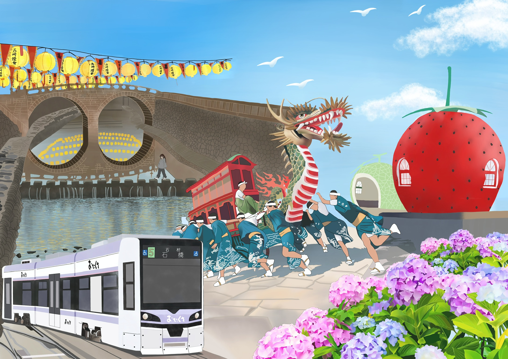
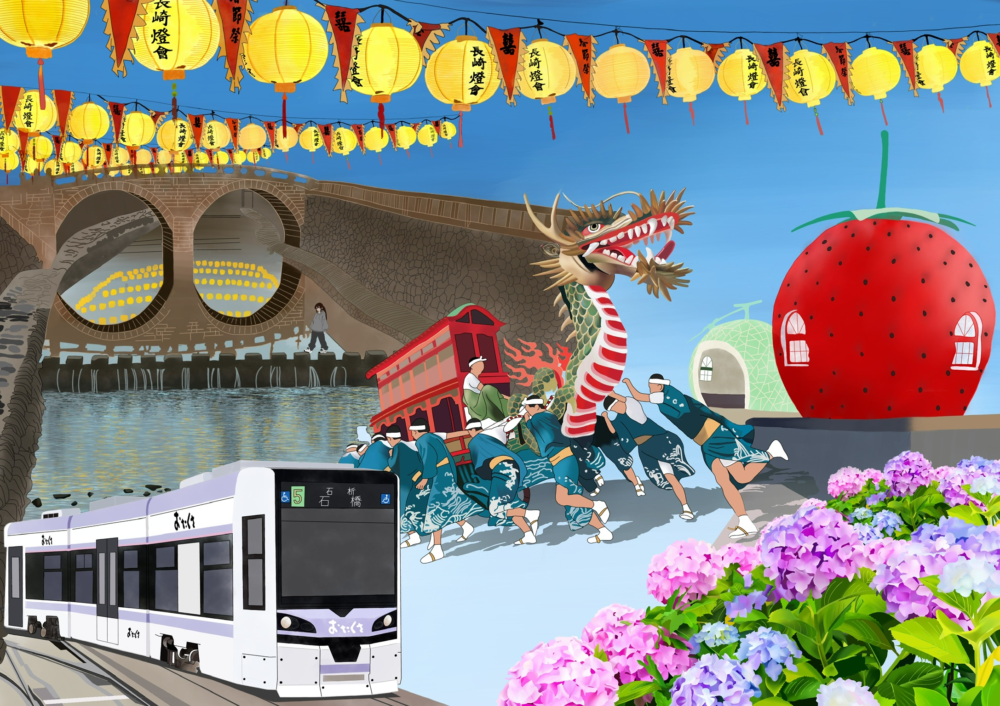

デジタル
長崎
制作期間
約4ヶ月
作品について
長崎の観光地や伝統文化をテーマに制作したデジタルイラストです。眼鏡橋や龍踊り、路面電車などのモチーフを組み合わせ長崎の魅力が伝わるような作品にしました。
使用ツール
アイビスペイント
制作の流れ

高校時
高校時代に展覧会への出品に向けて制作した作品です。長崎の観光地や伝統文化をテーマに、長崎の有名なものを1つの作品に描きました。
それぞれのモチーフが立体的に見えるように1つ1つのモチーフに複数のレイヤーに分けて細かいところまで描きこむことにこだわりました。
リニューアル後
高校卒業後、この作品を更にリニューアルしたいと考え制作しました。
空が暗い印象だったためより明るく奥行きがでるようにしたいと思い空を明るくしたり、さらに空いたスペースに雲や鳥を描き足して広がりを出し、足元にタイルを描き込むことで画面全体の奥行きが出るように工夫しました。